Sie werden eingesetzt, um:
Code-Bereiche abzugrenzen
➔ Block
Entscheidungen zu treffen
➔ Verzweigung
Wiederholungen auszuführen
➔ Schleife
den Programmfluss zu steuern
➔ Sprung
{ }
int a = 2;
{
int a = 3;
println(a); // Ausgabe: 3
}
println(a); // Ausgabe: 2
| Kategorie | Operatoren | Beispiel |
|---|---|---|
| Arithmetisch | +, -, *, /, % | a + b |
| Vergleich | ==, !=, <, >, <=, >= | a > b |
| Logisch | &&, ||, ! | a && b |
| Zuweisung | =, +=, -=, *=, /= | a += 2 |
| Inkrement/Dekrement | ++, – | a++ |
Wenn …, dann …
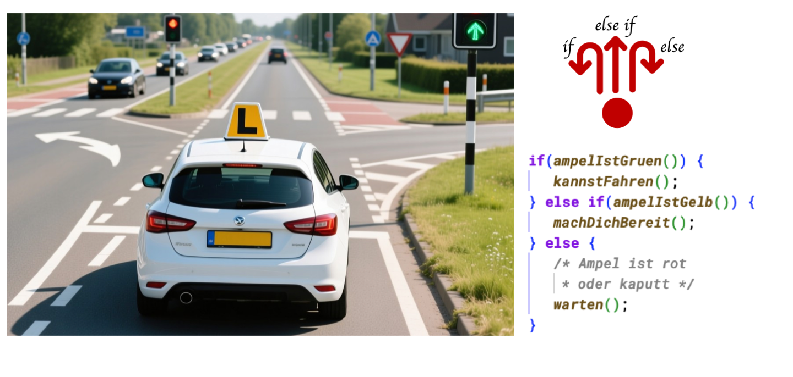
if (Ausdruck) {
Anweisung;
} else if (Ausdruck) {
Anweisung;
} else {
Anweisung;
}
if-else-Kontruktionen werden schnell unübersichtlich ➔ Hier kann eine switch-Anweisung Abhilfe schaffen
Idee: Variable / Ausdruck mit mehreren bekannten Vergleichswerten überprüfen
Beispiel: Pfeiltasten beim Jump’n Run Spiel
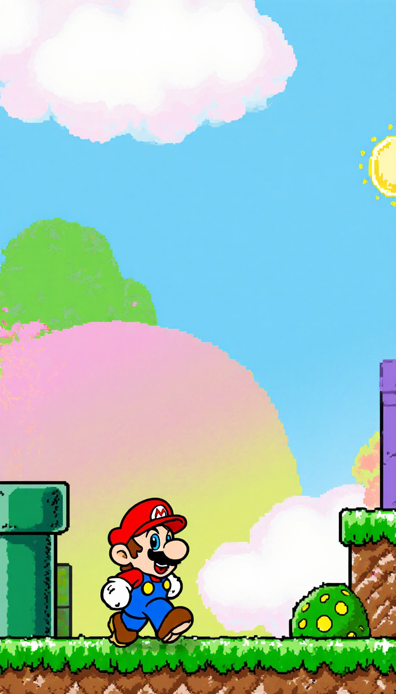
switch (Ausdruck) {
case Option: Anweisung; break;
…
default : break;
}
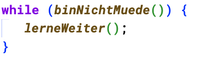
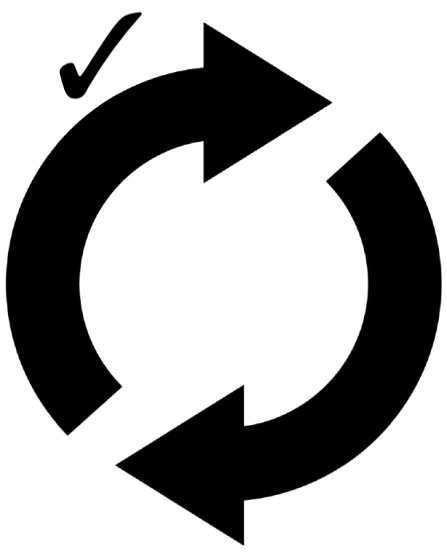
while (Bedingung) {
Anweisung;
}
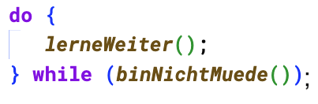
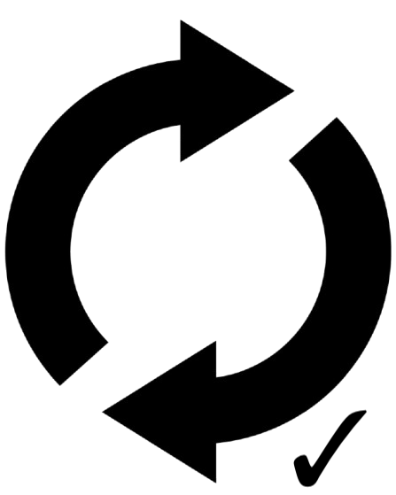
do {
Anweisung;
} while (Bedingung);
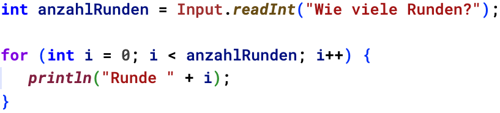
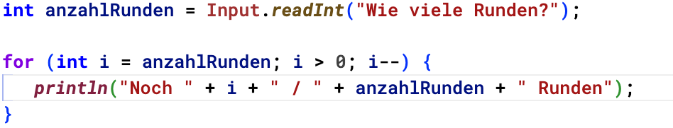
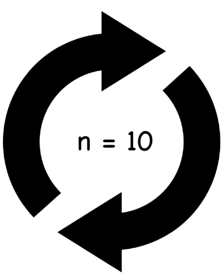
for (Datentyp Zähler = Startwert; Zähler < Endwert; Zähler += 1) {
Anweisung;
}
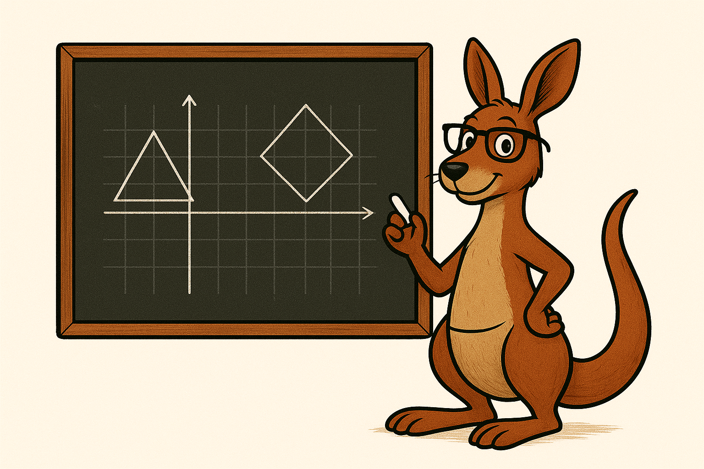